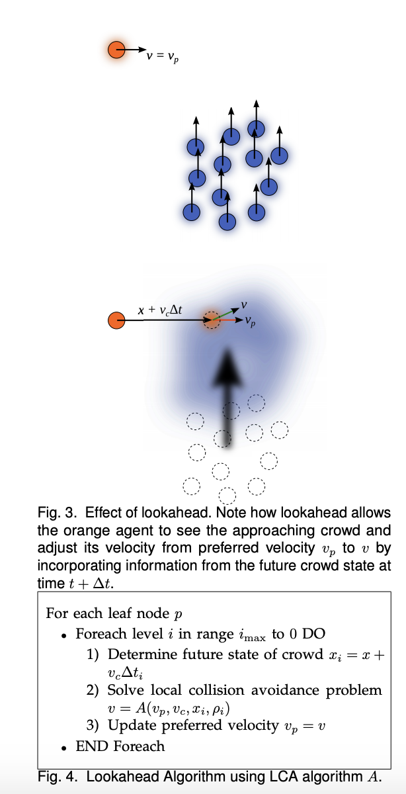
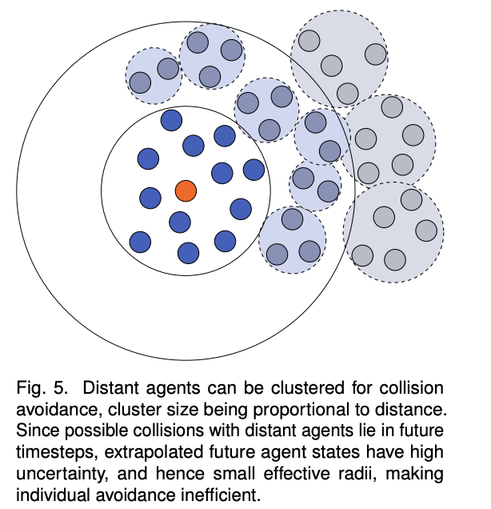

Notes on Hybrid Long-Range Collision Avoidance for Crowds
June 20, 2020
Based on:
Hybrid Long-Range Collision Avoidance for Crowd Simulation Golas2013. Using long range “vision” for collision avoidance in crowds. Hybrid technique for crowd sim blends continuous and discrete algorithms.
Intro
Collision avoidance algorithms have 2 categories: discrete and continuum. Continuum is for high density crowds. Discrete is for any density, but costs escalate at higher densities. This paper does the following:
- New approach for long range collision avoidance that can be used with discrete and continuum methods.
- Metric to serve as a basis for comparing crowd motion
- Hybrid algorithm for continuum and discrete collision avoidance.
Crowd sims usually have 2 steps: Global and Local.
- Global step plans the path for each agent and looks at static obstables.
- Local step involves Local Collision Avoidance (LCA) with other agens.
Continuum Lookahead
 Agent orange has preffered velocity $v_p$ calculated from the gobal step. That is updated through the optimization problem in Eq 2 of the paper to $\hat{v}$.
Look ahead is determined by the future state of the crowd $x_i$ where $i$ is the amount of time to look ahead. Uncertainty is accounted for by making the underlying grid larger and larger for each $i$ until $i_{max}$.
- Lookahead is computed as a tree
- Preferred velocity is updated
- One gradient descent solve per agent per level, can be parrallelized
- Avoids calculating global pressure to exert forces
Discrete Lookahead
 Reciprocal velocity obstable (RVO) for collision avoidance. Colliding velocities of agent and neighbors become a constraint in the optimization. One optimization per agent, but lots of constraints. The solution is to group distant agents into clusters.
Curtailing Lookahead
Ignore lookaheads if there is an obstacle in the way.
Inconsistency metric
Hybrid crowds
Continuum + Discrete hybrid.
Continuum methods suffer in low density crowds. Agents can routinely collide and need to be pushed apart. Continuum grids have aliasing issues resulting in damped velocities.
Discrete methods suffer numerical issues at high densities.